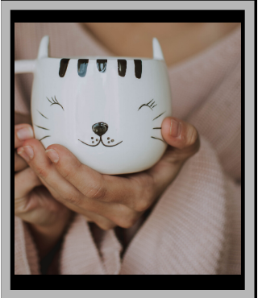

My passion for photography began when I just had a camera and a bus ticket in my hand. I was staring outside the window, sipping my cofee, when I noticed how beautiful the surroundings were. I felt like it was a beauty that needed to be shared. That is where my interest began. I took a lot of photographs on my journey to make this website.Most of these photos were taken in Mississauga. I believe that natural beauty is existent everywhere. Therefore, it does not really matter what location you pick to click your pictures.